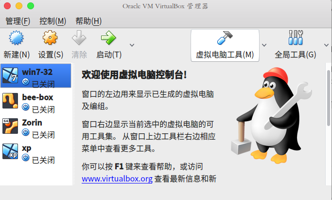
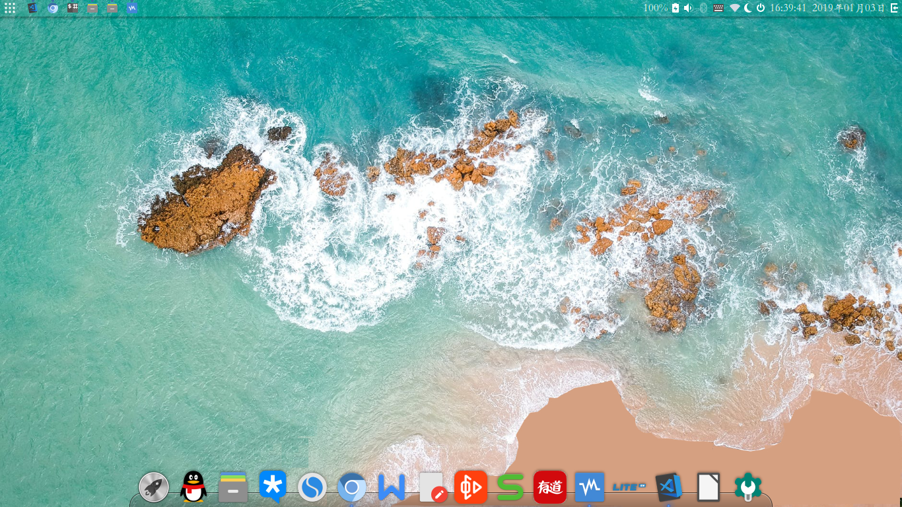

Part one: install ubuntu with Vbox¶
This part mainly talking about how to install ubuntu with Virtual-Box(Vbox), if you are a linux user you can pass this article, if not, I advise you do not.
First: download Virtualbox¶
You need to download a Vbox install source file. Here.
And choose your version to fit your OS. When you finished install it maybe look like following.
Second: download ubuntu install file¶
You need to download a ubuntu install source file. There are some optinos for you, as for me, I advise you ubuntu-budgine. Here.
Third: start to install¶
- First step
- Click the button showing as the following picture.
- Second step
- After you did first step, you will get a response as following, then you need give a name for your virtual OS and cilck Next step.
- Third step
- I advise you give 2G memory for your vitural OS, and if you have 8G memory of your computer then 4G memory will be better. But it also depend on what you gonna do with your vitural OS.
- Fourth step
- You need to pass some pages as default until you meet with the following page. Like I show in the picture, 35 interal storage for your virtual OS.
- Fifth step
- After you finished the above steps, you will see picture like following.
- Sixth step
- Double click your virtual OS you had built, then you will see picture as following.
- Seventh step
- At label one choose your ubuntu-budgie install file and click label two.
Fourth: Finish your install¶
After you finish your install, you will see the OS, I hope you will like it. There a considerable sum of set options to change but it will not mention in our article and you will find it out when you ge familiar with linux. The following picture is my own linux desktop.
Fifth: One way to install ubuntu software¶
- First step
Change your software sources, you can google or baidu how. I advise you aliyun is good.
- Second step
Use
sudo apt-get install deepin-deb-installerto install our first deb file installer. Maybe you cannot find it andsudo apt-get install gdebialso a good deb file installer.
- Third step
After you install deepin-deb-installer or gdebi you can install deb file without command. Then you can download a deb file like SogouPinyin Here.
Then choose to open it with deepin-deb-installer or gdebi.